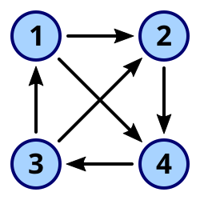

Understanding Directed Graphs in Python
In this post we'll implement and work with a directed graph in Python, walking through basic components such as edges, adjacency lists, and traversal.
A directed graph (or digraph) is a set of nodes connected by edges, where the edges have a direction — meaning they go from one node to another.

🛠️ Here's how to build a simple directed graph class in Python using an adjacency list:
class Graph:
def __init__(self, vno):
self.vertex_count = vno
self.adj_list = {v: [] for v in range(vno)}
def add_edge(self, u, v, weight=1):
if 0 <= u < self.vertex_count and 0 <= v < self.vertex_count:
self.adj_list[u].append((v, weight))
def print_graph(self):
for vertex, neighbor in self.adj_list.items():
print(f'Vertex {vertex} : {neighbor}')🔍 In the above code:
add_edge(u, v)adds a directed edge from node u to node v.- The adjacency list stores a list of tuples representing neighbors and weights for each vertex.
🧪 Let's test it with a few nodes and connections:
if __name__ == "__main__":
graph = Graph(4)
graph.add_edge(0, 1)
graph.add_edge(0, 2)
graph.add_edge(2, 3)
graph.print_graph()✅ Expected output:
Vertex 0 : [(1, 1), (2, 1)]
Vertex 1 : []
Vertex 2 : [(3, 1)]
Vertex 3 : []🎯 Key takeaways:
- Directed graphs only connect one way:
(u -> v). - No edge from
v -> uis assumed unless explicitly added. - Useful for dependency trees, social graphs (followers), or routing systems.
🔗 Source code: GitHub Repository